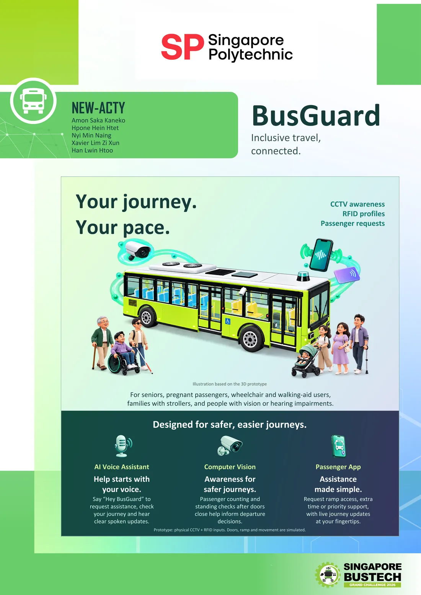
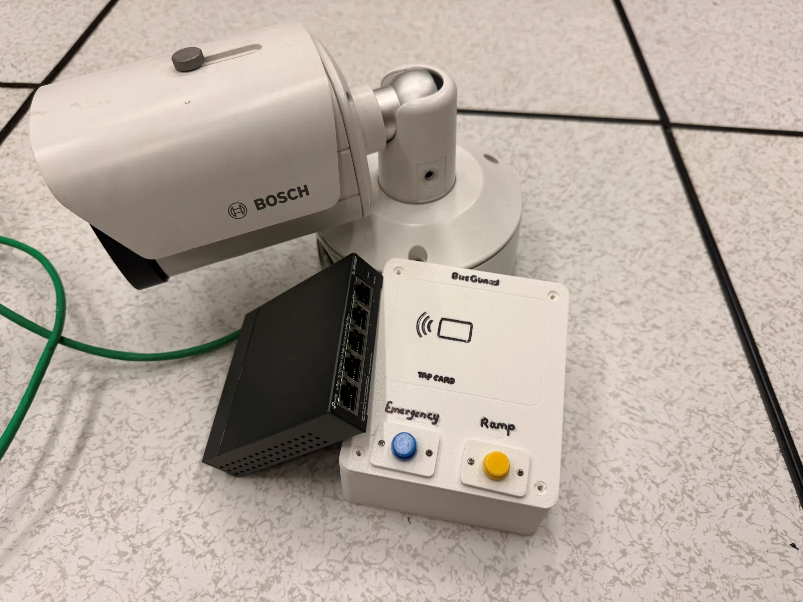
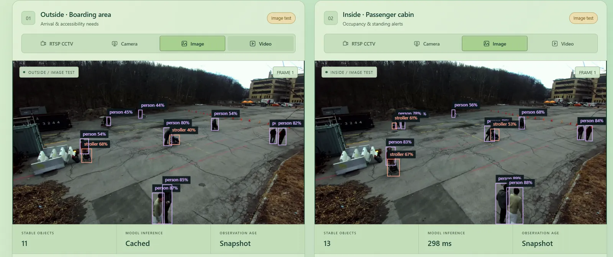
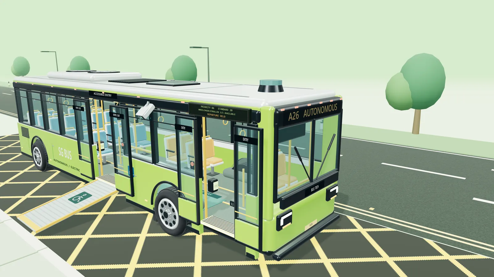
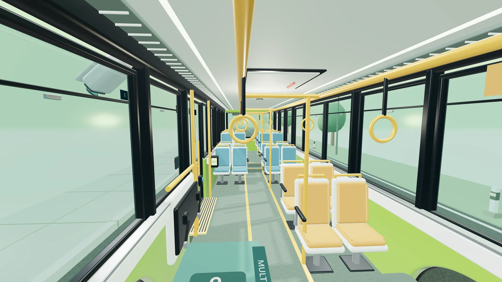
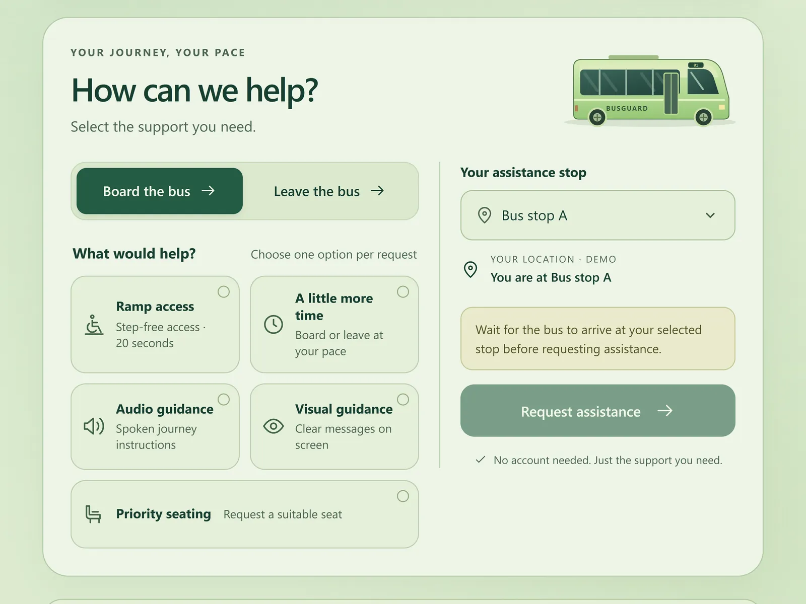
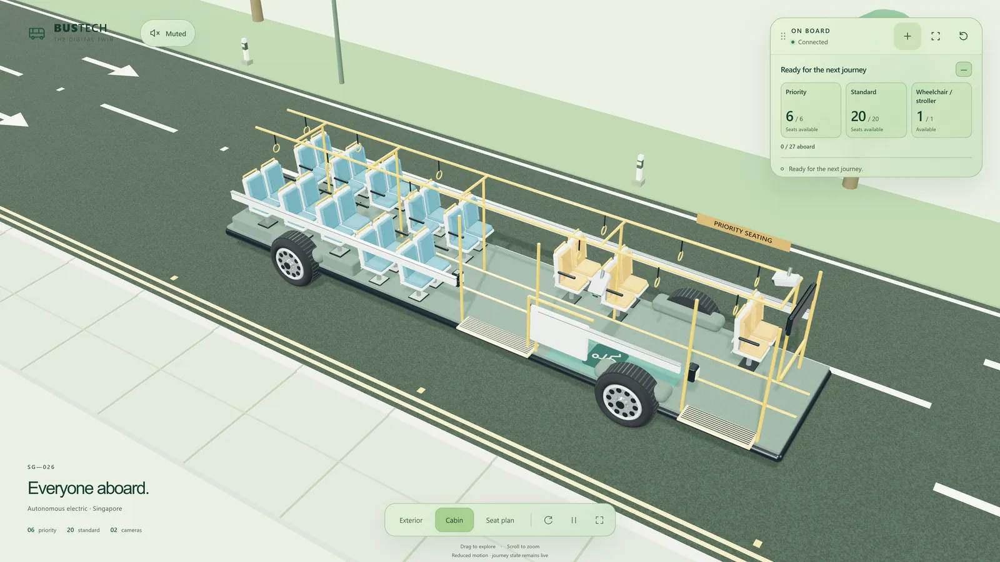
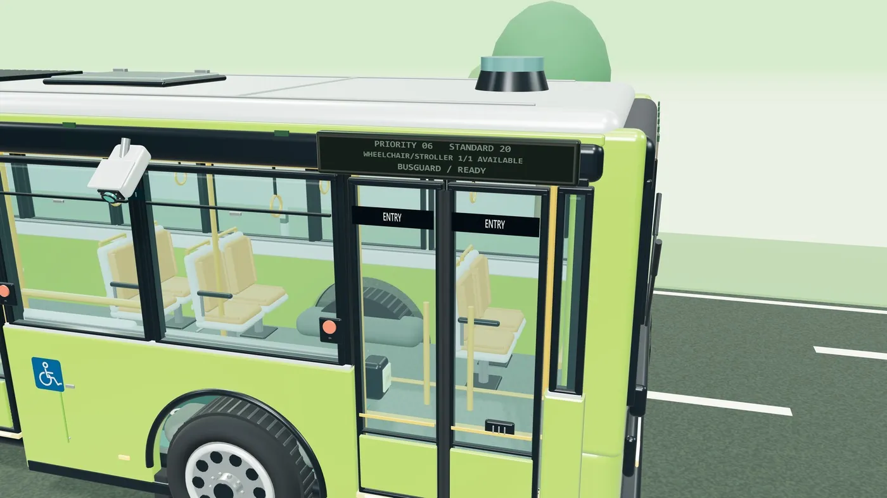
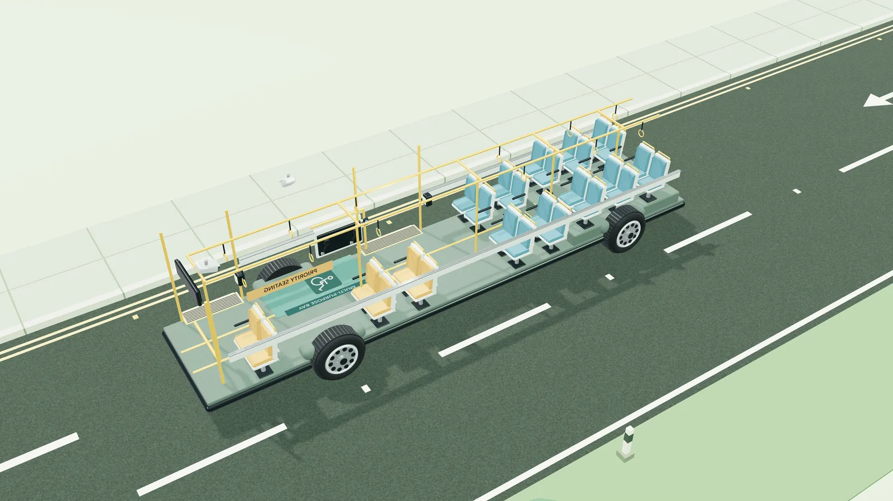
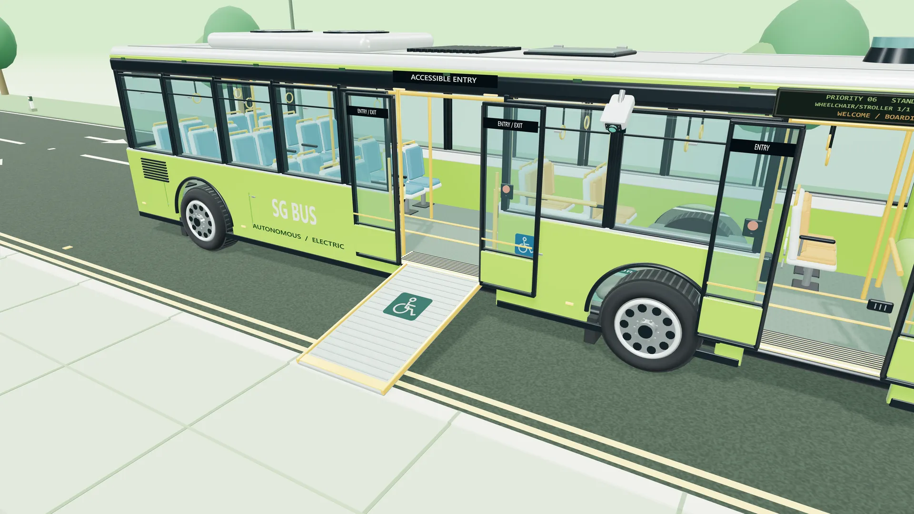

CompetitionTop 5 finalist
Singapore BusTech Grand Challenge 2026
BusGuard
Passenger assistance for autonomous vehicles. Cameras, a passenger app and a 3D model of the bus work together so that wheelchair users, seniors, parents with strollers and people with vision or hearing difficulties can still get help when there's no driver on board.
- My role
- Networking and System Integration
- Team
- NEW-ACTY · Singapore Polytechnic
- Timeline
- June – October 2026
- Result
- Top 5, Grand Final
- Tools
- YOLOE, Python FastAPI, MQTT, RTSP

Overview
On an autonomous vehicle there's no driver to ask for help. A wheelchair user may need the ramp, a senior may need more time to board, and someone with poor eyesight may need the next stop read out. BusGuard makes sure they still get that help.
- Cameras spot people who may need help, such as someone in a wheelchair or with a stroller, walking frame or cane.
- A passenger app, a card tap or a button lets anyone ask for help directly, including needs a camera can't see.
- An operator console, used by the person watching over the bus remotely, shows how full the bus is, who has asked for help, and whether it's safe to leave.
We built it for the Singapore BusTech Grand Challenge 2026, a national competition run by LTA. Our team of five reached the top 5 and the Grand Final.
My part was the networking: making sure every piece could talk to every other piece. I connected the security camera to our system, set up the messaging that carries information between the different parts, and made sure the live video reached the operator console without dropping out. Everything runs on a small private network, with no internet needed.

How it works
- The camera watches the door. It sends live video over a network cable (using RTSP, a standard way to stream camera video).
- AI looks at the video. It draws a box around each person and anything like a wheelchair or stroller, so the system knows who might need help.
- Messages connect everything. When the AI spots something, or a passenger presses a button or uses the app, a short message is sent to the rest of the system (using MQTT, a lightweight messaging system).
- One "brain" makes the decisions. It keeps track of who needs help, how full the bus is, and whether it's safe to leave. If it isn't sure, the bus waits.
- Three views of the same information: the passenger app, the operator console, and a 3D model of the bus that shows the doors, ramp and journey.
Our automated tests (over 1,200 checks) all passed, and the prototype cost only about SGD 50 because we reused equipment we already had.

Challenges
A frozen picture can lie. If the camera's video freezes, the screen keeps showing the last picture. An empty doorway in an old picture could make the bus think it's safe to close the doors when someone is actually there. So the system always checks how old each picture is. If the video stops or gets stuck, the bus waits instead of guessing.
Messages can arrive twice. If a button press is sent again because the network was slow, the ramp shouldn't go down twice. Every request is confirmed once and repeats are ignored. After a restart, the system waits for fresh information before doing anything.
Working without the internet. Everything runs on a small private network on the bus, so it keeps working with no signal and the video never leaves the bus. The trade-off is that one computer does all the work, so we have to keep an eye on how much it can handle as more cameras are added.

Gallery







What I learned
- Plan for things going wrong. Cameras and networks don't always work perfectly. Deciding what the system should do when the video drops out mattered as much as making it work on a good day.
- Build in separate pieces. Because each part only had to send and receive simple messages, different teammates could build the camera, AI, app and 3D model on their own, and they still worked together.
- Agree early on how the pieces talk. In a team of five, deciding the message formats at the start is what let us put everything together before the deadline.